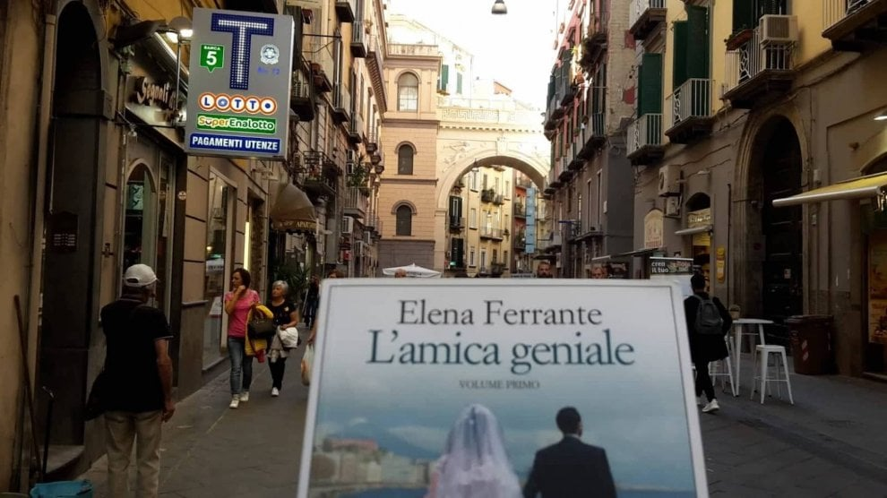

Elena Ferrante (Italian pronunciation: [ˌɛːlena ferˈrante]) is a pseudonymous Italian novelist.
Ferrante's books,
originally published in Italian, have been translated into many languages. Her four-book series of Neapolitan
Novels are among her best-known works. Elena Ferrante is the name used by the author of half a dozen novels, the
best known of which is the four-volume work entitled the Neapolitan Novels. The Neapolitan Novels tell the
life story of two perceptive and intelligent girls born in Naples in 1944, who try to create lives for
themselves within a violent and stultifying culture. The series consists of My Brilliant Friend (2012), The
Story of a New Name (2013), Those Who Leave And Those Who Stay (2014), and The Story of the Lost Child (2015),
which was nominated for the Strega Prize, an Italian literary award.

The Neapolitan Novels
The Neapolitan Novels are a 4-part series by the Italian author Elena Ferrante,
translated by
Ann Goldstein and
published by Europa Editions (New York). They include the following novels: My Brilliant Friend (2012), The
Story of a New Name (2013), Those Who Leave and Those Who Stay (2014), and The Story of the Lost Child
(2015).
The series has been characterized as a bildungsroman, or coming-of-age story. In an interview for the
Harper's Magazine, Elena Ferrante stated that she considers the four books to be "a single novel", published
serially for reasons of length and duration. The series has sold over 10 million copies in 40 countries.
The series follows the lives of two perceptive and intelligent girls, Elena (sometimes called "Lenù") Greco
and
Raffaella ("Lila") Cerullo, from childhood to adulthood and old age, as they try to create lives for
themselves
amidst the violent and stultifying culture of their home – a poor neighborhood on the outskirts of Naples,
Italy. The novels are narrated by Elena Greco.
The series was adapted into a two-part play by April De Angelis at the Rose Theatre, Kingston in March
2017.
The Rose production will transfer to the Royal National Theatre in November 2019. The first book in the
series
has also been adapted into an HBO television series entitled My Brilliant Friend.
Quotes:
“Nothing you read about Elena Ferrante’s work prepares you for the ferocity of it."
—Amy Rowland, The New York Times
“Her prose is crystal, and her storytelling both visceral and compelling.”
—The Economist
"La vita bugiarda degli adulti" ("The Life of Lies of Adults") seems to
flow directly out of the epics of "My
Brilliant Friend", for the structure of its narrative, the style and the topics. The first person narrator is
Giovanna, an adolescent confronted with family lies. Obviously, no dialogue with the author is envisaged, and
the answers get lost in a mass of unspoken thoughts. But that's all right. The answers convey contrasting
feelings, haughtiness, and humility, irritation and sincerity, the frown of the "priestess of letters" and the
honesty of the good craftsman who explains his work meticulously. Which is not so very different from the
ambivalence of her extraordinary female characters, always able to touch upon truths that hurt. That is enough
to make you listen without arguing. (Simonetta Fiori in La Repubblica newspaper)
A modern masterpiece from one of Italy’s most acclaimed authors, My Brilliant Friend is a rich, intense, and
generous-hearted story about two friends, Elena and Lila. Elena Ferrante’s inimitable style lends itself
perfectly to a meticulous portrait of these two women that is also the story of a nation and a touching
meditation on the nature of friendship. The story begins in the 1950s, in a poor but vibrant neighborhood on the
outskirts of Naples. Growing up on these tough streets the two girls learn to rely on each other ahead of anyone
or anything else. As they grow, as their paths repeatedly diverge and converge, Elena and Lila remain best
friends whose respective destinies are reflected and refracted in the other. They are likewise the embodiments
of a nation undergoing momentous change. Through the lives of these two women, Ferrante tells the story of a
neighborhood, a city, and a country as it is transformed in ways that, in turn, also transform the relationship
between her protagonists, the unforgettable Elena and Lila. Ferrante is the author of three previous works of
critically acclaimed fiction: The Days of Abandonment, Troubling Love, and The Lost Daughter. With this novel,
the first in a quartet, she proves herself to be one of Italy’s great storytellers. She has given her readers a
masterfully plotted page-turner, abundant and generous in its narrative details and characterizations, that is
also a stylish work of literary fiction destined to delight her many fans and win new readers to her fiction.
Italian writer Elena Ferrante’s operatic Neapolitan Quartet, a series that spans four volumes and six decades of
friendship, traces the intertwined lives of characters Lila and Lenù. The series begins with Lenù and Lila’s
childhood as they grow up in a poor Neapolitan neighborhood and traces their subsequent lives as wives, mothers
and ultimately lonely old women. The quartet is a series of cyclical events encapsulated in a larger cyclical
narrative structure. The first book of the series, entitled “My Brilliant Friend,” opens at the fourth book’s
close. Rino, Lila’s son, telephones Lenù to tell her that his mother has gone missing. At the end of the final
book, entitled “The Story of a Lost Child,” there is no answer as to where Lila has disappeared. However,
Ferrante writes such a thorough description of Lila’s character and psyche throughout the series that, in the
final book, it makes sense as to why she erased herself. It seems not to matter where she’s gone. Lila is mean,
whip-smart and down-trodden — how could she not want to disappear, how could she not want to melt into what she
calls the “dissolving boundaries” of her complicated world?
Ferrante weaves an intricate cloth depicting detailed scenes and characters that repeat themselves over and over
to construct a patterned, sprawling tapestry. These intimate, very often domestic, scenes that Ferrante writes
involve only the characters introduced in a list at the beginning of each volume. Though the scenes are private
and the characters insular, the story conveys broad-reaching meditations on class, femininity and politics.
Lenù and Lila are foils for one another. Lenù is blonde, studious, eager to please, self-doubting and ambitious,
whereas Lila is dark, naturally brilliant, mercurial, mean and irresistible to those around her. The story is
told from Lenù’s point of view, but the two friends understand one another on such a deep and complex level that
the reader is often privy to Lila’s perceived inner thoughts. The two are paradoxically bound to, yet at odds
with, one another. Lenù cannot resist Lila’s magnetism, her cutting intellect and her unbounded passion even
when Lila is at her most cruel. Ferrante’s prose is cerebral. The reader is immersed not only in Ferrante’s
cinematic scenes, but also in Lenù’s body and her psyche. Ferrante lays bare Lila and Lenù’s most unlikable
traits: their respective failures as mothers, their self-absorption, their gnawing anxiety, their seeming
inability to experience joy and their mutual jealousy.
"Yes, I am of the opinion that our class origin cannot be erased, but I don't say this
in
a tone of
despair,
quite the contrary, I think this is positive. Class origin is permanent proof, indelibly etched in our body,
that inequalities exist and last, even when individually we are co-opted up to the higher levels, even when we
learn to disguise ourselves with intelligence and good taste. The problem is we never save ourselves on merit or
grace alone. Andrea knows this, he carries within himself the low and the high and though he studiously
dedicates himself to ideas of radical economic and social change, he wants to go even higher, he fears a return
to his origins for himself and his daughter, regression and precipice, he hopes Giovanna will move up like him
and higher than him. In other words, he is not a linear character. We carry within us at the same time, the
gospel, feudalism, the French revolution, Bonapartism, proletarians of the world who unite knowing all they have
to lose is their chains, fascism and all together an irrepressible desire for supremacy and wellbeing for us and
our children, whatever group we belong to, here and now, at all costs".
One has to be very fortunate not to be touched even slightly by violence and its various
manifestations in
Naples. But perhaps that’s true of New York, London, Paris. Naples isn’t worse than other cities in Italy or in
the world. I’ve spent a lot of time coming to an understanding of it. In the past, I used to think that only in
Naples did the lawful continuously lose its boundaries and become confused with the unlawful, that only in
Naples did good feelings suddenly, violently, without any break, become bad feelings. Today it seems to me that
the whole world is Naples and that Naples has the merit of having always presented itself without a mask. Since
it is a city by nature of astonishing beauty, the ugly — criminality, violence, corruption, connivance, the
aggressive fear in which we live defenseless, the deterioration of democracy — stands out more clearly.
As a girl, I read all kinds of things, in no particular order, and I didn’t pay attention to the
names of the
authors — whether they were male or female didn’t interest me. I was enthralled by [the characters] Moll
Flanders, by the Marquise de Merteuil, by Elizabeth Bennet, by Jane Eyre, by Anna Karenina, and I didn’t care
about the sex of the writer. Later, in the late ’70s, I began to be interested in writing by women. If I stick
with French writers, I read almost all of Marguerite Duras. But the book of hers that I’ve spent the most time
with, studied most closely, is “The Ravishing of Lol V. Stein”; it’s her most complex book, but the one you can
learn the most from.
Certainly, female writing exists, but mainly because even writing is powerfully conditioned by
the
historical-cultural construction that is gender. That said, gender has an increasingly wide mesh, its rules have
been relaxed, and it is more and more difficult to reconstruct what has influenced and formed us as writers. For
example, I learned from the books I loved and studied, by male and female authors, and I could easily name them,
but I’ve also been deeply affected by sentences whose provenance I no longer remember, whether it was male or
female. The literary apprentice, in short, passes through channels that are hard to identify. So I would avoid
saying that I was formed by this or that author. Above all, I would avoid saying that I was formed essentially
by women’s writing, even though I very much loved and still love “House of Liars,” by Elsa Morante. We are in a
period of great change, and the presentation of gender is at risk of being not only unconvincing but not really
valid.